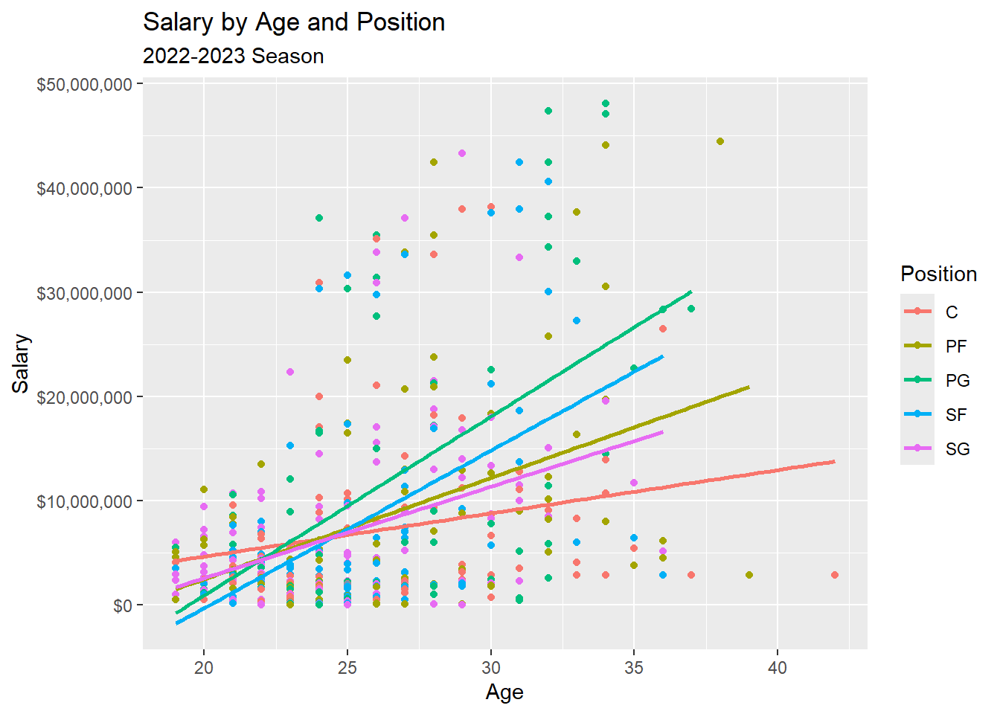

Multiple linear regression
Modeling Inference
Data Science with R
Getting Started
Programming exercises are designed to provide an opportunity for you to put what you learn in the videos and readings. These exercises feature interactive code cells which allow you to write, edit, and run R code without leaving your browser.
When the ▶️ Run Code button turns to a solid color (with no flashing bubble indicating that the document is still loading), you can interact with the code cells!
Packages
We’ll use the tidyverse and tidymodels for this programming exercise. These are already installed for you to use!
Motivation
The National Basketball Association (NBA) is a professional sports league that consists of 30 teams across the United States and Canada. In the early 2000s, NBA teams started to use advanced analytics to gain a competitive edge over their opponents. Teams employ the use of analytics to make data driven decisions on game strategy and business operations. In this programming exercise, we are going to work with NBA data to try and better understand the salary NBA players make.
Dataset information
This dataset consists of player per-game statistics for the NBA’s 2022-23 season with player salary data. We are going to use just a subset of these variables in this programming exercise. The variables we will use can be seen below. The data key for the entire data set can be revealed below.
| Variable | Description |
|---|---|
| Salary | Yearly salary a NBA players make in USD |
| Position | Position on the court the NBA player plays: PG, SG, SF, PF, and C |
| Age | Age of the player, rounded to the nearest year |
CautionData key
Need to expand
| Variable | Description |
|---|---|
| Salary | Yearly salary a NBA players make in USD |
| Position | Position on the court the NBA player plays: PG, SG, SF, PF, and C |
| Age | Age of the player, rounded to the nearest year |
| Team | Team of the NBA player |
| GP | Total number of games played |
| GS | Total number of games the player started |
| MP | Average number of minutes played |
| FG | The total number of shots made (2P + 3P) |
| FGA | The total number of shots taken (2PA + 3PA) |
| FG% | The percentage of all shots made (FG / FGA) |
| 3P | The total number of 3-point shots made |
| 3PA | The total number of 3-point shots taken |
| 3P% | The percentage of 3-point shots made (3P / 3PA) |
| 2P | Total number of 2-point shots made |
| 2PA | Total number of 2-point shots attempted |
| eFG% | Effective Field Goal Percentage ( (FG + 0.5*3P) / FGA) ) |
| FT | Total number of free throws made |
| FTA | The total free throws attempted |
| FT% | The percent of FTs made (FT / FTA) |
| ORB | Average offensive rebounds per game |
| DRB | Average defensive rebounds per game |
| TRB | Total rebounds (ORB + DRB) per game |
| AST | Average assists per game |
| STL | Average steals per game played |
| BLK | Average blocks per game played |
| TOV | Average turnovers per game |
| PF | Average fouls accrued per game played |
| PTS | Average points scored per game played |
Now, let’s explore these data!
Exploratory Data Analysis
Before we fit a linear regression model, we are going to explore the data. Let’ start with exploring our response variable of interest, cholesterol (Salary). Specifically, we are interested in the relationship between Salary, Age, and Position. Below, calculate the mean and standard deviation for your quantitative variables. In the same code, produce the count of each position.
TipSolution
nba |>
group_by(Position) |>
summarize(mean_salary = mean(Salary, na.rm = TRUE),
sd_salary = sd(Salary , na.rm = TRUE),
mean_age = mean(Age, na.rm = TRUE),
sd_age = sd(Age, na.rm = TRUE),
position_n = n())# A tibble: 5 × 6
Position mean_salary sd_salary mean_age sd_age position_n
<chr> <dbl> <dbl> <dbl> <dbl> <int>
1 C 7282722. 8983558. 26.3 4.48 91
2 PF 8885045. 10897789. 26.6 4.78 86
3 PG 11579573. 13889342. 26.2 4.35 77
4 SF 8132253. 11055604. 25.6 3.64 91
5 SG 6681301. 8308597. 24.7 3.85 115Visualizing the data
We are now going to plot our response variable Salary vs Age using a scatterplot. We are also going to color the points based on Position. The plot can be seen below.

From the videos, we learned about two different times of multiple linear regression models that we could fit:
Additive models: The relationship between x and y does not change based on z
Interaction models: The relationship between x and y does change by z
(Thought exercise) Based on these definitions, do you think it would be appropriate to fit an additive or interaction model?
TipSolution
It is justifiable to fit an interaction model instead of an additive model. Based on the scatterplot, we can see that the relationship between Salary and Age changes depending on the position the player plays.
Modeling
So we can explore both concepts, regardless of your conclusion in the though exercise, we are first going to fit an additive model. We are going to this to:
– Show that R will still fit the model, despite it not being the most appropriate
– Practice fitting additive models
– Practice interpreting additive model output
Additive model
Fit the additive model below. Name this model m1, and wrap this object in the tidy() function. Next, interpret the estimate for PositionPF in the context of the problem.
TipSolution
m1 <- linear_reg() |>
set_engine("lm") |>
fit(Salary ~ Age + Position, data = nba)
tidy(m1) |>
select(term, estimate)# A tibble: 6 × 2
term estimate
<chr> <dbl>
1 (Intercept) -20019456.
2 Age 1038670.
3 PositionPF 1307286.
4 PositionPG 4391276.
5 PositionSF 1602852.
6 PositionSG 1095288.As an NBA player ages one year, we estimate a mean salary increase of 1,307,286 usd if they play PF.
(Thought exercise) What position do you not see a term for? Where is it?
TipSolution
We don’t see a specific term for C. That is because it’s our (Intercept) term! We can interpret the intercept as: For an age of, we estimate the mean salary of an NBA C to be -2,0019,456 usd. Each other position estimate is the estimated difference in Salary relative to the C, after controlling for Age!
We can change the intercept. See the following code that changes the intercept to PG, and notice how the estimates change based on what our intercept term is! Note: Age does not change, because the relationship between Salary and Age does not depend on Position.
nba_diff <- nba |>
mutate(Position = fct_relevel(Position, "PG"))
m2 <- linear_reg() |>
set_engine("lm") |>
fit(Salary ~ Age + Position, data = nba_diff)
tidy(m2) |>
select(term, estimate)# A tibble: 6 × 2
term estimate
<chr> <dbl>
1 (Intercept) -15628180.
2 Age 1038670.
3 PositionC -4391276.
4 PositionPF -3083990.
5 PositionSF -2788424.
6 PositionSG -3295988.Interaction model
Now, it’s time to fit the interaction model between Salary, Age, and Position. Please do so below, and interpret the Age:PositionPF interaction term.
TipSolution
m3 <- linear_reg() |>
set_engine("lm") |>
fit(Salary ~ Age * Position, data = nba)
tidy(m3) |>
select(term, estimate)# A tibble: 10 × 2
term estimate
<chr> <dbl>
1 (Intercept) -3607189.
2 Age 414290.
3 PositionPF -13289313.
4 PositionPG -29720679.
5 PositionSF -26887800.
6 PositionSG -11312489.
7 Age:PositionPF 556044.
8 Age:PositionPG 1300074.
9 Age:PositionSF 1096922.
10 Age:PositionSG 461940.For a Power Forward, a one-year increase in age, we estimate on average an increase in salary of approximately 970,334 usd.
Why 970,334? The term Age:PositionPF has a coefficient of 556,044. This is the estimated difference in the slope coefficient vs the Center position. Thus, the slope coefficient specifically for the PF position is estimated to be 414,290 larger than the baseline.
Note: This is the mathematical representation to the plot created above!
If we do change the baseline term, the Age coefficient will also change, because the interaction term allows for the relationship between Age and Salary to change based on Position. Let’s see this below.
m3 <- linear_reg() |>
set_engine("lm") |>
fit(Salary ~ Age * Position, data = nba_diff)
tidy(m3) |>
select(term, estimate)# A tibble: 10 × 2
term estimate
<chr> <dbl>
1 (Intercept) -33327869.
2 Age 1714364.
3 PositionC 29720679.
4 PositionPF 16431366.
5 PositionSF 2832880.
6 PositionSG 18408190.
7 Age:PositionC -1300074.
8 Age:PositionPF -744030.
9 Age:PositionSF -203152.
10 Age:PositionSG -838134.In Summary
– Multiple linear regression allows for a single quantitative variable to be modeled by > 1 explanatory variable.
– An additive model has the restriction of keeping the relationship between x and y consistent , regardless of the values of the other variables in the model.
– An interaction model relaxes this restriction, and allows the relationship between x and y to change based on values of z.
– Regression output has a baseline group when one explanatory variable is categorical. This can be found in the Intercept term, with the other categorical level coefficients representing the deviation from the baseline.
Your Turn: Challenge
Use this space to fit more complicated models, and explore different relationships that model our response variable Salary! As a reminder, the complete data key can be found above.